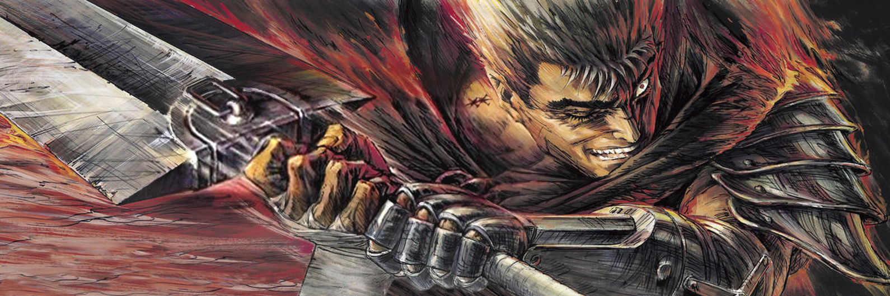

Мои любимые аниме
Это: "ДжоДжо", "Драгон Болл", "Берсер", "Баки", "Ковбой БиБоп", и "Блич"...
Об Аниме
ДжоДжо
Из поколения в поколение потомки семейства Джостаров наследуют родимое пятно в форме звезды, инициалы ДжоДжо и семейное дело - раз за разом спасать мир. Каждый ДжоДжо - индивидуален и в то же время разделяет точку зрения предшественников о добре и справедливости. От Англии 19 века до современной Японии - это поистине невероятное приключение длиною не просто в жизнь героя, а в жизнь целого семейного древа. Множество практически независимых историй, связанных линией родства главных героев, посвящены головокружительным путешествиям, безумным сражениям и, конечно же, вечным вопросам дружбы и любви. «Невероятные приключения ДжоДжо» - на данный момент ярчайший представитель жанра сейнен и одна из самых культовых японских франшиз. За 30 лет существования манга стала гордостью Японии, а с выходом новой аниме-экранизации культурный феномен ДжоДжо начал притягивать тысячи поклонников с запада. Безумный стиль, безумный шарм, безумные сюжетные повороты и безумные схватки - глоток свежего воздуха для всей аниме-индустрии. Оценка 10 Жожо из 10
Драгон Болл
Бытует легенда о разбросанных по миру Жемчужинах Дракона - магических артефактах, которые способны исполнять любые желания. Именно о такой мечтает юноша по имени Гоку, отправляясь в длинное странствие, в котором встречает верных товарищей и мудрых наставников, а также сильных врагов. Приготовьтесь окунуться в самое что ни на есть классическое аниме и познакомиться с самым настоящим прародителем жанра сёнэн. Dragon Ball - это шедевр на все времена, удостоенный множества наград и оставшийся в сердцах зрителей навсегда. Ещё бы, ведь там взрываются целые планеты! Оценка 10 Гоку из 10
Берсерк
Детство Гатса было кошмарным, ведь мальчишка вырос в суровых условиях. Воспитанием паренька занимался безжалостный наёмник, который насиловал женщин и кровожадно убивал врагов. С ранних лет юноша обучался искусству владения мечом, и уже в семь лет он мог противостоять взрослым бойцам. В один злополучный день парень стал жертвой насилия собственным опекуном, а потом ему пришлось убить насильника. Гатс попытался сбежать из лагеря наёмников, но на открытой местности на него напали волки, с которыми подростку пришлось сражаться. Мальчишке удалось выжить, но смерть ходила по пятам храброго воина. Вскоре воинственный подросток стал наёмником, которому нет равных. Чёрный мечник имел невероятную физическую силу, а потому он пользовался огромным мечом под названием "Убийца драконов". В очередной схватке подросток сумел с большим преимуществом победить сильнейшего бойца армии завоевателей. После кровопролитного сражения на умелого воина напали бойцы Гриффита, но убить мечника им не удалось. После виртуозной дуэли с Гриффитом парню пришлось присоединиться к "Банде Ястреба". Это стало началом великих похождений могущественного чёрного мечника. Многочисленные сражения, а также ранения закалили не только дух, но и тело воина. Аниме "Berserk" расскажет о приключениях сильнейшего бойца "Банды Ястреба", который ищет своё предназначение в этом суровом и прогнившем от тиранического правления мире. Оцека 10 Гатсов из 10
Баки
В мире боевых искусств существует легендарный титул "Король ринга" и он принадлежит безжалостному бойцу по имени Юдзиро Ханма. Мужчина всю жизнь посвятил тренировкам, а потому он стал обладателем нечеловеческой силы. Юдзиро является сильнейшим бойцом на планете, и представители разных школ боевых искусств шарахаются безжалостного убийцу. У "Короля ринга" есть сын, которого зовут Баки и ему недавно исполнилось тринадцать лет. Когда Баки был малышом, он стал свидетелем унижения собственной матери, которая пострадала от руки безжалостного папаши. Юноша поклялся, что отомстит кровожадному отцу и для этого ему пришлось тренироваться с пелёнок. В свои тринадцать лет подросток способен в одиночку перебить больше тридцати человек и при этом остаться в живых. Вот только такие результаты школьника не устраивают, ведь он хочет попасть на всемирный турнир, где будут участвовать лучшие мастера со всей планеты, а также заклятый враг Баки. Впереди парня ждут сложные тренировки, а также и опасные схватки с умелыми противниками. Мальчишка готов не только идти до конца, но и положить на кон собственную жизнь, ведь он обязан выполнить обещание, данное матери. Демонстрацию уникальных боевых стилей, кровавые схватки и смертельные поединки придётся увидеть зрители аниме "Grappler Baki". Вскоре юноше улыбнётся фортуна, и он попадёт на великий турнир, на котором ему повстречаются превосходные и достойные бойцы со всего мира. Оценка 10 Юдзиро из 10
Ковбой Бибоп
Человечество было вынуждено колонизировать Солнечную систему, ведь после техногенной катастрофы на Земле Луна была разрушена. Учёным удалось создать гиперпространственные врата, которые позволяют быстро перемещаться между планетами. Уникальная технология ускорила освоение новых земель, а также строительство колоний. Вот только чиновники не ожидали, что гиперпространственными вратами начнут пользоваться преступные синдикаты. Влияние бандитов стало настолько велико, что вскоре появились охотники за головами. Самыми знаменитыми охотниками являются Спайк Шпигель, который работает вместе с напарником Джетом Блэком. Ребята давно привыкли к безумным схваткам с кровожадными головорезами, а поэтому их тяжело чем-то удивить. Джет и Спайк договорились, что на их корабле "Бибоп" никогда не будет посторонних людей. На очередном задании друзья наткнулись на генетически модифицированную собачонку по имени Эйн. В составе команды появился новый охотник за головами, но не последний. Очередным исключением стала Фэй Валентайн, которая является первоклассной мошенницей, а также компьютерный гений Радикал Эдвард. Спайк пренебрёг собственными принципами и теперь на корабле "Бибоп" четыре профессионала. Матёрые охотники готовы отправиться на поиски самого опасного преступника, который может стать причиной настоящего Апокалипсиса. Общепризнанной классикой японской анимации можно смело назвать аниме "Cowboy Bebop". Новоиспечённых напарников ожидают головокружительные приключения, а также невероятно зрелищные схватки. Вскоре Шпигель и Блэк будут благодарить судьбу за то, что они встретили Фэй и Эйн, ведь их враг окажется искусным головорезом. Оценка 10 Бибопов из 10
Блич
Встреча с потусторонним переворачивает жизнь японского школьника Ичиго Куросаки. Узнав о Сообществе Душ и Пустых, он ввязывается в безумный круговорот событий и сам в итоге становится проводником душ в загробный мир - Шинигами. Движимый желанием защитить дорогих ему людей, Ичиго не сразу осознаёт, какая сила в нём сокрыта… Долгое время «Bleach» считался эталоном сёнена 21 века и конкурировал по популярности разве что с «Наруто», однако Анкорд и прерванная трансляция поставила многоточие в судьбе Блич - столь известного аниме-сериала онлайн. Несмотря на длительный перерыв, поклонники манги всё ещё надеются на продолжение столь полюбившейся за многие годы истории. Оценка 10 Кенпачи-Куна из 10